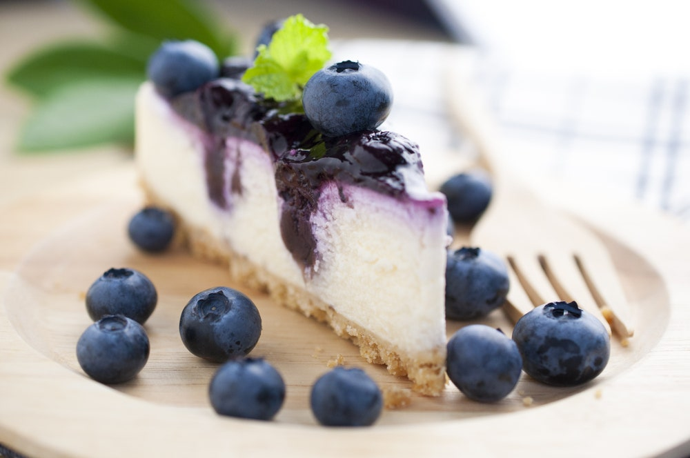

Cheesecake is a sweet dessert consisting of one or more layers.
The main and thickest layer consists of a mixture of soft, fresh cheese, eggs, and sugar.

A blueberry cheesecake in its natural habitat.
Origins
An ancient form of cheesecake may have been a popular dish in ancient Greece.